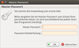

Hibiscus
Dieser Artikel wurde für die folgenden Ubuntu-Versionen getestet:
Ubuntu 16.04 Xenial Xerus
Ubuntu 14.04 Trusty Tahr
Zum Verständnis dieses Artikels sind folgende Seiten hilfreich:
Hibiscus  ist ein freier und quelloffener Online-Banking-Client für das HBCI-Protokoll, der dank Java sowohl unter Linux als auch unter Windows und Mac OS X läuft. Hibiscus basiert auf HBCI4Java
ist ein freier und quelloffener Online-Banking-Client für das HBCI-Protokoll, der dank Java sowohl unter Linux als auch unter Windows und Mac OS X läuft. Hibiscus basiert auf HBCI4Java  und läuft als Plugin in Jameica .
und läuft als Plugin in Jameica .
Dieser Artikel beschäftigt sich mit der Installation der beiden Komponenten und dem ersten Programmstart. Hinweise zur Verwendung sind unter Hibiscus/Einrichten und im Handbuch zu finden.
Voraussetzungen¶
Hibiscus basiert auf Java. Die Installation wird im Artikel Java/Installation beschrieben. Die Verwendung von Hibiscus mit OpenJDK 7 und 8 wurde erfolgreich getestet. Eine Nutzung mit OpenJDK 9 ist derzeit nicht möglich (Stand: Mai 2017).
Installation¶
Die Installation ist wahlweise über ein "Personal Package Archiv" (PPA) [1] oder manuell möglich.
PPA¶
Bei dieser Fremdquelle handelt es sich um eine vom Entwickler unterstützte Bezugsquelle . Es wird Ubuntu bis Version 16.04 unterstützt (Stand: Januar 2018).
Adresszeile zum Hinzufügen des PPAs:
ppa:dennis-benndorf/ppa
Hinweis!
Zusätzliche Fremdquellen können das System gefährden.
Ein PPA unterstützt nicht zwangsläufig alle Ubuntu-Versionen. Weitere Informationen sind der  PPA-Beschreibung des Eigentümers/Teams dennis-benndorf zu entnehmen.
PPA-Beschreibung des Eigentümers/Teams dennis-benndorf zu entnehmen.
Damit Pakete aus dem PPA genutzt werden können, müssen die Paketquellen neu eingelesen werden.
Nach dem Aktualisieren der Paketquellen kann das folgende Paket installiert werden:
hibiscus (ppa)
 mit apturl
mit apturl
Paketliste zum Kopieren:
sudo apt-get install hibiscus
sudo aptitude install hibiscus
Jameica wird als Abhängigkeit automatisch installiert.
Manuell¶
Eine manuelle Installation ist zwar nicht so komfortabel wie ein PPA und muss von Hand aktualisiert werden, aber auf diesem Weg kann die gerade aktuellste Version genutzt werden. Es wird die Jameica-Plattform und das Hibiscus Plugin installiert.
Installation Jameica¶
Hinweis!
Fremdsoftware kann das System gefährden.
Anmerkung: Bitte keine neue Version von Jameica über eine alte installieren. Die alte Version vorher immer entfernen bzw. löschen. Kontendaten werden im Ordner ~/.jameica/ gespeichert und gehen dabei nicht verloren.
Hierfür lädt man die Datei jameica-linux.zip (32-Bit) oder jameica-linux-amd64.zip (64-Bit) von der Downloadseite  herunter. Anschließend entpackt [2] man die Datei im Terminal [3], z.B. in das Verzeichnis /opt/:
herunter. Anschließend entpackt [2] man die Datei im Terminal [3], z.B. in das Verzeichnis /opt/:
32-Bit:
sudo unzip Downloads/jameica-linux.zip -d /opt/
64-Bit:
sudo unzip Downloads/jameica-linux64.zip -d /opt/
Installation Hibiscus¶
Das Hibiscus-Plugin kann nach dem ersten Start von Jameica via Online-Update oder manuell als ZIP-Datei installiert werden.
Via Online-Update¶
Hierzu im Menü auf "Datei -> Plugins online suchen", in der Liste das Plugin "hibiscus" in der gewünschten Version (-nightly steht für Entwicklungsversion) wählen und auf "Herunterladen und installieren..." klicken. Plugin-Ordner "Benutzer-Ordner" wählen und mit "übernehmen" bestätigen, anschließend Jameica neustarten.
Manuell¶
Alternativ kann Hibiscus als ZIP-Datei hibiscus.zip heruntergeladen und in den Plugins Ordner (hier z.B. /opt/jameica/plugins) von Jameica entpackt werden:
sudo unzip Downloads/hibiscus.zip -d /opt/jameica/plugins
Programmstarter erstellen¶
Bei einer manuellen Installation bietet es sich an, einen Programmstarter [4] zu erstellen, um jederzeit komfortabel auf Hibiscus zugreifen zu können. Der Programmstarter wird als ~/.local/share/applications/hibiscus.desktop im Homeverzeichnis gespeichert:
[Desktop Entry] Version=1.0 Type=Application Name=Hibiscus Comment=Homebanking Comment[de]=Freie Homebanking-Anwendung Exec=/opt/jameica/jameica.sh Icon=/opt/jameica/jameica-icon.png Categories=Office,Finance; Terminal=false
Abschließend den Programmstarter ausführbar machen:
chmod u+x ~/.local/share/applications/hibiscus.desktop
Der erste Start¶
Nachdem Hibiscus und Jameica gemeinsam installiert worden sind, kann Hibiscus bei Ubuntu-Varianten mit einem Anwendungsmenü über "Büro -> Hibiscus" gestartet werden {5]. Bei der manuellen Installation lautet der Befehl im Terminal:
/opt/jameica/jameica.sh
Im ersten Fenster, das sich öffnet, wird das Daten-Verzeichnis gewählt. Hibiscus bietet hier das Standardverzeichnis ~/.jameica/ an, in dem die Daten abgelegt werden. Die Option "Künftig immer diesen Ordner verwenden" setzen und mit einem  -Klick auf "Übernehmen" die Einstellung bestätigen.
-Klick auf "Übernehmen" die Einstellung bestätigen.

Nach erfolgtem Start wird sich das "Master-Passwort"-Fenster öffnen. In diesem Fenster wird ein Passwort für Hibiscus vergeben. Ein sicheres Passwort sollte mind. 10 Zeichen besitzen. Nach der Vergabe des Passwortes dieses mit einem -Klick auf "OK" bestätigen.
Problembehebung¶
Kubuntu¶
Bei Kubuntu 14.04 kommt es in Kombination mit dem Design Oxygen zu massiven Programmabstürzen, die eine Nutzung unmöglich machen (Quelle). Abhilfe schafft das Erstellen der Datei ~/.gtkrc-2.0 im Homeverzeichnis mit dem folgenden Inhalt:
style "combobox" {
GtkComboBox::appears-as-list = 1
}
class "GtkComboBox" style "combobox" Links¶
Hibiscus FAQ
- häufige Fragen und Antworten; bei Problemen zuerst hier schauen Hibiscus Wiki
- DokumentationJameica/Hibiscus Fehlermanagement für Software-Entwickler
- Qualitätssicherung
HBCI4Java Bereich im Onlinebanking-Forum.de
- Unterstützung durch die Gemeinschaft
- Erstellt mit Inyoka
-
 2004 – 2017 ubuntuusers.de • Einige Rechte vorbehalten
2004 – 2017 ubuntuusers.de • Einige Rechte vorbehalten
Lizenz • Kontakt • Datenschutz • Impressum • Serverstatus -
Serverhousing gespendet von